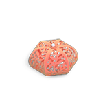

Получено: файл; исходный URL. Исходный файл с альтернативного хоста без перекодирования; идентичность файлу исходной ссылки не проверена, авторство не установлено. Страница: источник.


Бумажные шарики 3
историческая браузерная социальная игра; платформа и редакция уточняются- Тип
- Ресурсная декорация острова
- Версия и дата
- историческая браузерная социальная игра; платформа и редакция уточняются
Данные по источнику · браузерная игра; платформа не уточнена · декабрь 2014 — дата публикации статьи; дата поздних правок неизвестна
Предварительно: Фанатский источник; условие появления, точная расстановка и вероятности выпадения требуют проверки.. Требуется сверка.
- Расположение
- Сказочный лес; нельзя купить. Раздел «Растения и рецепты» используется для ресурсных объектов; это не выращиваемая культура.
- Ресурс
- 15 единиц ресурса по статье; добываются снежки при помощи каменотёсов или Палочки-выручалочки.
- После сноса
- По статье остаётся синий Мешок Санты. Точная исходная позиция и число экземпляров не сообщаются.
Связанные сущности
- Сказочный лес — расположение
- Снежок — добываемый материал
- Мешок Санты — синий — сокровище после сноса